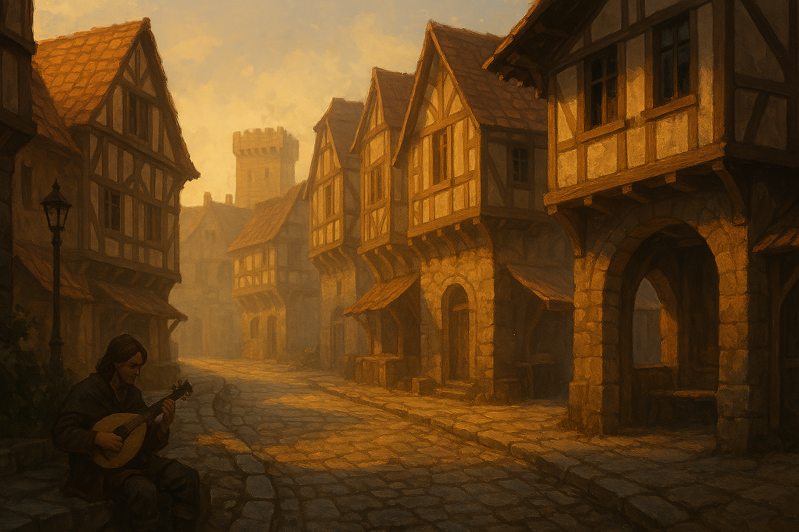

Chapter 2: Detour to Macksohn
Hand of the Lich

Hand of the Lich
15050.11.19
天終於亮了。冒險者們看見原本一樓空無一人的櫃檯後，默默冒出了昨天看見的老婦人，而且他是真實存在有肉體的人。
在冒險者詢問後，發現老婦人生存的年代不太合理，據他所說，巴納沃二世剛上任不久。Siri 想起前一晚和路人問到的，如果 50 年前這棟旅社便歇業了，那也許這名老婦人便是從那時被封存到現在，不斷重複播放的一段回憶。同時老婦人表示這間旅社叫 Monroe’s Flat，是他的家族歷代經營的。樓上的火也是。在快天亮時，樓上的火已經熄滅了，冒險者們也發現，縱使他們沒看見一樓被火勢燒到，牆面上卻都留有火燒的痕跡。
和老婦人詢問起樓上莫名的樓層，老婦人表示這間旅社只有兩層樓而已。在冒險者們的帶領下，老婦人跟著大家走到二樓，卻看不見通往「三樓」的樓梯，在他面前的僅僅是一到堅實的牆。儘管冒險者們在他面前走上這樓梯，他仍然無法跨越這面牆。
不久後，冒險者們和老婦人道別，離開 Monroe’s Flat，決定回舊旅店和 YHWH 和 Indigo 會合。
YHWH 看見 Indigo 還在熟睡叫不醒，自己先收拾好行李，來到旅店外的馬廄等待其他人到來。與大家會合後，Samael 和 Midori 一起到樓上叫 Indigo 下來，大家便出發前往麥克嵩。
冒險者們在日落左右抵達了麥克嵩，城門口的衛兵似乎也對他們沒有特別阻攔，因此大家很順利的就進去了。Samael 看見城門旁之前光顧過賣馬的店已經休息了，提議隔天早上再去買馬。
大家決定先去熟悉的 Gate’s Inn 住宿，然後再討論今晚是否還有其他行動。同時，Beau 也和 Midori 表示有話想和他私下說。
來到 Gate’s Inn，兩年不見的 Kevin 見到 Midori，立刻張大了雙眼。在 Midori 的談判下，他們住進了三樓的通鋪房，Kevin 也答應為他們準備晚餐。Midori 和 Beau 在樓下討論事情，其他人則先上樓放行李，順便等 Kevin 備餐。Kevin 不經意間聽到 Beau 喊 Midori 媽媽，讓他十分心碎。Beau 也和 Midori 提起，希望等等有機會能回他以前在麥克嵩的家去看看。
半小時後，已回到樓上房間的 Midori 和 Beau 以及其他人一併來到樓下，Kevin 已準備好晚餐，讓大家分兩桌坐。大家狼吞虎嚥一番後，決定兵分兩路：Midori 和 Siri 一起陪 Beau 回他老家，Samael、Ron 和 YHWH 則想去王宮圖書館找資料，Indigo 則待在房間休息。
Beau 的老家就在舊城區，三人花了不久時間就到了。看起來破損的家，門一推就開。Beau 走入了他的舊臥室，翻找了一下，拿起一個小女生造型的娃娃，緊緊抱在懷裡，然後便將娃娃放進背包，示意 Midori 和 Siri 可以走了。Siri 對這個房子有點興趣，但裡面實在是太破舊了，也看不出任何有用的東西。
離開 Beau 的老家後，三人決定前往 Mr. Moon 的辦公室。Midori 記得當時 Mr. Moon 曾告訴他們，下次他們回麥克嵩時，他很有可能已經不在人世間了，但他還是想去碰個運氣。Patton’s 的門沒有鎖，三人輕鬆地便推開了。Beau 在 Mr. Moon 的辦公桌上看見一張字跡已斑駁的信，遞給了 Midori。這似乎是封道別信，Mr. Moon 最後的署名是在 15048 年。Midori 好好將這封信收在自己的背包內。Midori 請 Siri 協助將 Mr. Moon 上鎖的抽屜打開，但在轉動的過程中，鎖被破壞掉了打不開，幸好鑰匙沒有損壞。Beau 見狀直接用拳頭用力一拳，木製的抽屜便破開了。Midori 拉開抽屜，看見裡面放了一疊二十來張的 Mr. Moon 名片，和當時 Samael 拿到的名片看起來一樣。在好奇心之下，Siri 嘗試點了名片三下，這次他並沒有如 Samael 當時一樣被傳送到哪裡去，但名片卻開始不斷震動。大家不清楚到底發生什麼事了，但在 Midori 的測試下，他在名片上點了三下後，瞬間傳送到了 Siri 的身邊，現場三人都感到驚喜。離開前，Midori 也想起自己似乎有一套禮服放在這裡的更衣間內。打開門，他看見那套禮服還好好的被保存，他也就將禮服收好放在背包內，接著三人便離去了。
三人決定去王宮花園碰碰運氣，卻發現王宮花園此刻入口已關了起來，有兩名衛兵站在門口。Midori 和衛兵詢問了是否最近有看到 Roline？衛兵表示他通常早上都會在花園散步，可以一早來看看，但此刻花園入口已經關了，不讓他們進去。三人決定先回 Gate’s Inn 休息。
吃完晚餐後，Ron、Samael 和 YHWH 決定先去王宮圖書館。依照記憶，三人先前往王宮花園的入口，但是在衛兵的說明下，雖然圖書館還開著，但他們唯一能走的王宮花園入口現在不能開放進入，因此最早也是明天早上才能來一趟。
Samael 想起之前在花園前廣場的攤販，急忙跑去找了以前吃過的沙威瑪攤位，剛好買到了最後一份，熟悉的香味讓他感到滿足。
三人決定去之前發現拉索斯教集會場地的地下道探索，於是他們決定從當初燒毀的崔尼斯劇院進入。崔尼斯劇院現在已經停止營業，改造成了劇院遺址，看起來早上有在收費讓人進入參觀。三人趁著沒人管理時鑽了進去，從當時逃出來，通往地下的入口走下去。YHWH 決定在外面等待，Samael 和 Ron 兩人自己到了地下道。小心避開陷阱，兩人聽見了地下道似乎傳來了動物的低鳴聲，那聲音讓他們回想起了拉茲特獸。
繞道了當時的拉索斯教集會所，裏面是一片廢墟，被燒毀的櫥櫃完全沒有修復，地上也已經沒有神秘的粉末了。眼看沒有特別的收穫，兩人決定去之前看見有關著拉茲特獸的小柵欄看看。柵欄內有兩隻成體的拉茲特獸，除此之外，在他們前面，還有一個人的屍體。Ron 仔細一看，這個人似乎只是昏迷，沒有死去。懷疑著拉茲特獸是否是肉食性的，Samael 打開了一個肉罐頭，湊到拉茲特獸面前，但他們毫無反應。此時，兩人聽見地下道遠處傳來了腳步聲，兩人趕緊躲到一旁。遠處走來了兩個身穿黑袍的拉索斯教徒，停在柵欄前。其中一名教徒提及，看起來「那個人」不夠格加入拉索斯教，接著便拿出匕首，將倒臥在拉茲特獸面前的昏迷的人割開喉嚨，然後兩人便回頭走了。Samael 和 Ron 對於剛剛看見的事感到訝異，但也沒辦法做任何事。在離開前，Samael 聽見了一聲極小聲地拉茲特獸叫聲，從兩隻成體拉茲特獸身後傳來，他趕緊爬到柵欄後，發現有一隻小隻的拉茲特獸，於是他便將小拉茲特獸抱走，決定佔為己有。
兩人決定往當時可以通往地下道的 Brock 房間洞口走去。當年的洞沒有被填補起來，而且上方是暗的，於是兩人一小拉茲特獸（還有酷爆）便從地下道爬了上來。Brock 的房間看起來也沒有被動過的痕跡，讓人意外的是，他家客廳看起來也很久沒有活動的痕跡了，Brock 的父母很有可能也不住在這了。接著 Samael 和 Ron 便決定直接從這裡回旅店去了。
等了一兩個小時，YHWH 一直沒有等到 Samael 和 Ron，於是他決定自己離開了。YHWH 記得怎麼從舊城區或麥克嵩的城門走回 Gate’s Inn，但他不記得怎麼從文創區走回那裡。東張西望想找人詢問的他，意外的看見了一個他們在尋找的人—Roline。和 Roline 熱情的打招呼，YHWH 看見的卻是一個看起來空洞的 Roline，擺出僵硬的微笑，不帶感情地回應他，就連 YHWH 和他提起 Ron，Roline 也像是聽到普通人一樣，沒有當初如少女般的反應。YHWH 感到極度懷疑，卻也沒能發現 Roline 身上有任何魔法的痕跡。Roline 表示自己要去買點東西，詢問 YHWH 要不要一起跟上？YHWH 婉拒，但向 Roline 詢問了回到 Gate’s Inn 的方向。Roline 也表示他明天一早再去 Gate’s Inn 找他們。說完後，他便晃著晃著走去了前方的雜貨店。YHWH 小心跟蹤著，看見 Roline 離開店舖時手上多了個袋子，但也看不出是買什麼東西。尾隨 Roline 一路到王宮花園，看著 Roline 和衛兵點頭致意後走入花園內，接著無法進入花園的 YHWH 便跟丟了。
等到眾人回到 Gate’s Inn，YHWH 問了 Kevin 上一次見到 Roline 是什麼時候？Kevin 表示幾個月前都還有見到他，但上次說話已經是快要兩年前了。YHWH 和冒險者們說明剛剛自己看到的狀況，也和大家商量是否今晚要換地方過夜，最後大家決定今晚還是在這裡過夜，但安排個守夜比較保險。
Midori 也和大家分享了剛剛在 Patton’s 拿到的 Mr. Moon 道別信。大家討論著 Mr. Moon 是否不在這個世界上了，但也不知從何確認起。同時，Midori 也拿出 Mr. Moon 的一疊名片。大家測試著名片的功能，先從 Samael 帶回來的小拉茲特獸—此時已被他命名為「慢爆」，酷爆的弟弟—開始。被慢爆點過的名片，似乎直接壞掉了，沒辦法正常運作。接著，大家嘗試用已經睡著的 Indigo 的手指頭點，發現可以正常發揮效果。
原本通往大學城和方努爾市的遙遠路程，也許有了不同的規劃。
15050.11.20
夜晚，大家輪流守夜，以免發生了任何突發事件。接近日出時，樓下似乎傳出了些動靜，Siri 悄悄走到樓梯上觀看，發現是 Kevin 正在忙進忙出，也就放心地回房間去了。
不久後，樓下傳來了與剛才 Kevin 不同的聲響，這次換 Samael 下樓去。走到拐往一樓的轉角，一個身影直挺挺地站在樓梯間，背後的光線亮到 Samael 沒能看清楚這個成年女性是誰，但他的腦中冒出了 Roline 的名字。Samael 趕緊衝回房間去，背後傳來的腳步聲緩慢、穩定而沈重。Samael 趕緊叫醒大家，並將門關上。不久後，重重的敲門聲響起。
在大家不知道該怎麼辦時，最終是 Indigo 將門打了開來。Beau 站在門邊以防任何突發事件，而 Ron 則在窗戶邊，隨時可逃離。Roline 僵硬地走入了房間，面露不自然的微笑，直直地朝著窗邊的 Ron 走去，Ron 見狀，直接跳出窗外，拔腿就跑。
眾人在房間內保持警戒，卻又面面相覷。Roline 失去了目標，似乎一時不知該往哪裡走。他留下了一句，請大家告訴 Ron「他要的東西在大學城」。大家打量著 Roline，很明顯的，他和過去大家所認識的 Roline 有挺大的差異。手一碰，這才發現 Roline 身上的肌膚竟然成了陶瓷。他似乎成了一尊陶瓷娃娃。
大家決定留下還在熟睡中的 YHWH，下樓去先用餐，同時試探看看 Roline 發生了什麼事。Roline 像一般人類一樣，能正常的進食，讓大家有些驚訝，但從他身上似乎也得不到什麼有用的資訊。
另一頭，Ron 跑到了當初熟悉的 Sunrise。那裡的門鎖壞了，輕鬆就能進去。裡面十分陳舊，什麼食物都不剩。Ron 想起當時聽說的 Sunrise 的二樓，便索性試探看看到底 Sunrise 有沒有二樓，卻怎麼探索，看起來都只有一樓。
大家在旅店一樓一邊討論著接下來的計畫，一邊用餐，也一邊偷偷觀察 Roline。一段時間後，Roline 起身回到樓上房間。大家一開始也沒多想，直到突然想起 YHWH 還在樓上休息，Midori 和 Siri 便趕緊上樓去。
房間內，YHWH 深睡著，而 Roline 正趴在他身邊，朝著他的耳朵講著一連串大家聽不懂的語言。Siri 趕緊把他拉開，Roline 雖然僵硬，但也沒多反抗。兩人把 YHWH 叫醒，他看起來也沒有特別有異狀，大家也才放了心。
大家下樓後，不久後 Ron 也離開 Sunrise，在外面吃完東西回來了。大家決定還是要先離開旅店，準備接下來的旅程，但是對於如何處置 Roline，還沒有個頭緒。Midori 用他的小馬和 YHWH 先前往 Sunrise 去，Ron 跟著跑在後面，Samael 和 Sir 則跟在後頭，Indigo 則陪在 Roline 身邊。隨著 Midori、YHWH 和 Ron 走遠，Samael、Siri 和 Beau 決定要想辦法甩開 Roline，回去 Gate’s Inn 將忘記帶出來的慢爆帶出來。Roline 似乎注意到了，而 Indigo 則在接收到 Samael 的暗示後，想辦法支開話題，吸引 Roline 的注意力。
Samael、Siri 和 Beau 三人從 Gate’s Inn 房間將慢爆帶出來後，與 Midori、Ron 與 YHWH 一同在城門口集合。大家討論著離開麥克嵩的計畫，以及該買多少馬。研究著 Mr. Moon 的名片，Samael 等人瞬間移動到了 Indigo 身邊，他們發現 Indigo 和 Roline 正在王宮花園前的廣場談天，Indigo 看見大家，請了大家吃他買的沙威瑪，也偷偷告訴 Samael，他會好好照顧 Roline，要他們不用擔心。
回到城門口，一行人決定去一趟王宮圖書館，YHWH 想查清楚他從「Roline」口中聽到的話：Roline 的異常，似乎和月神有些關係。靠著 YHWH 的學者證，大家順利進入了圖書館，分頭尋找關於月神教、拉索斯教、拉茲特獸、大學城等資訊，也查閱了一下近一年內麥克嵩是否有發生什麼大事。根據 YHWH 找到的結果，月神除了芬尼爾外，似乎還有個「芬諾爾」，就像這裡的月亮有兩顆一樣。這位芬諾爾似乎常常被稱為「交易之神」，但他總會在資訊不對等的前提下，在交易中賺到些小便宜。
查完了想要的資訊，大家回頭到城門口，到之前造訪過的 Kerry’s 買馬。在老闆的帶領下，大家挑選了兩匹馬：Seizure the Great 和 Michael（隨後被大家重新取名為 Pizza the Great 和 Michelle）。老闆也附上了兩匹馬各一週的糧草送給大家。搭配著 Midori 召喚出的小馬，六名冒險者與三匹馬，就這樣離開了麥克嵩。